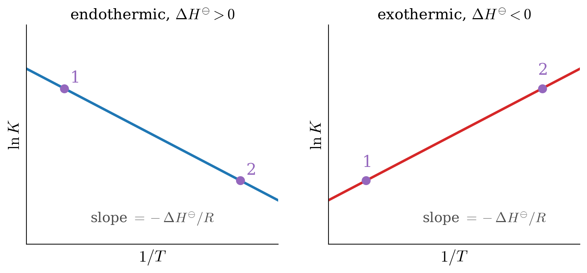

10 Chemical Equilibrium
In chapter 9, we learned that the Gibbs energy decreases during a spontaneous process at constant temperature and pressure, and we found how it depends on the composition of a mixture. In this chapter, we will apply these results to chemical reactions. Most reactions do not go all the way to products: they stop at a mixture of reactants and products, the chemical equilibrium. We will see that the composition of this mixture is set by the minimum of the Gibbs energy, which leads us to the equilibrium constant that you know from general chemistry. We will then study how the equilibrium constant changes with temperature and pressure, which gives a mathematical form to Le Chatelier’s principle.
10.1 Reaction Quotient and Equilibrium Constant
Let’s consider a prototypical reaction at constant \(T,P\):
\[ a\mathrm{A} + b\mathrm{B} \rightarrow c\mathrm{C} + d\mathrm{D} \tag{10.1}\]
The Gibbs energy of the reaction is defined as:
\[ \Delta_{\text{rxn}} G = G_{\text{products}} - G_{\text{reactants}} = G^{\text{C}} + G^{\text{D}} - G^{\text{A}}-G^{\text{B}}, \tag{10.2}\]
and replacing the absolute Gibbs energies with the chemical potentials \(\mu_i\), we obtain:
\[ \Delta_{\text{rxn}} G = c \mu_{\text{C}} + d \mu_{\text{D}} - a \mu_{\text{A}}- b\mu_{\text{B}}. \tag{10.3}\]
Assuming the reaction is happening in the gas phase, we can then use eq. 9.22 to replace the chemical potentials with their value in the reaction mixture, as:
\[ \begin{aligned} \mkern-60mu \Delta_{\text{rxn}} G =& \; c (\mu_{\text{C}}^\standardstate +RT \ln P_{\text{C}}) + d (\mu_{\text{D}}^\standardstate +RT \ln P_{\text{D}}) +\\ & - a (\mu_{\text{A}}^\standardstate +RT \ln P_{\text{A}}) - b (\mu_{\text{B}}^\standardstate +RT \ln P_{\text{B}}) \\ =& \; \underbrace{c \mu_{\text{C}}^\standardstate + d \mu_{\text{D}}^\standardstate - a \mu_{\text{A}}^\standardstate - b\mu_{\text{B}}^\standardstate}_{\Delta_{\text{rxn}} G^\standardstate} +RT \ln \frac{P_{\text{C}}^c \cdot P_{\text{D}}^d}{P_{\text{A}}^a \cdot P_{\text{B}}^b}. \end{aligned} \tag{10.4}\]
We can define a new quantity called the reaction quotient as a function of the partial pressures of each substance:1
\[ Q_P = \frac{P_{\text{C}}^c \cdot P_{\text{D}}^d}{P_{\text{A}}^a \cdot P_{\text{B}}^b}, \tag{10.5}\]
and we can then simply rewrite eq. 10.4 using eq. 10.5 as:
\[ \Delta_{\text{rxn}} G = \Delta_{\text{rxn}} G^\standardstate + RT \ln Q_P. \tag{10.6}\]
This equation tells us that the sign of \(\Delta_{\text{rxn}} G\) is influenced by the reaction quotient \(Q_P\). For a spontaneous reaction at the beginning, the partial pressures of the reactants are much higher than the partial pressures of the products, therefore \(Q_P \ll 1\) and \(\Delta_{\text{rxn}} G < 0\), as we expect. As the reaction proceeds, the partial pressures of the products will increase, while the partial pressures of the reactants will decrease. Consequently, both \(Q_P\) and \(\Delta_{\text{rxn}} G\) will increase. The reaction will completely stop when \(\Delta_{\text{rxn}} G = 0\), which is the chemical equilibrium point. At the reaction equilibrium:
\[ \Delta_{\text{rxn}} G = 0 = \Delta_{\text{rxn}} G^\standardstate + RT \ln K_P, \tag{10.7}\]
where we have defined a new quantity called equilibrium constant, as the value the reaction quotient assumes when the reaction reaches equilibrium, and we have denoted it with the symbol \(K_P\).2 From eq. 10.7 we can derive the following fundamental equation on the standard Gibbs energy of reaction:
\[ \Delta_{\text{rxn}} G^\standardstate = - RT \ln K_P. \tag{10.8}\]
To extend the concept of \(K_P\) beyond the four species in the prototypical reaction eq. 10.1, we can use the product of a series symbol \(\left( \prod_i \right)\), and write:
\[ K_P=\prod_i P_{i,\text{eq}}^{\nu_i}, \tag{10.9}\]
where \(P_{i,\text{eq}}\) are the partial pressures of each species at equilibrium. Eq. 10.9 is in principle valid for ideal gases only. However, reactions involving ideal gases are pretty rare. As such, we can further extend the concept of equilibrium constant and write:
\[ K_{\text{eq}} =\prod_i a_{i,\text{eq}}^{\nu_i}, \tag{10.10}\]
where we have replaced the partial pressure at equilibrium, \(P_{i,\text{eq}}\), with a new concept introduced initially by Gilbert Newton Lewis (1875–1946),3 that he termed activity, and represented by the letter \(a\). The activity is a dimensionless “effective concentration” that tells us how much each species contributes to the equilibrium. Its expression depends on the state of the species:
- Ideal gases: the activity is the partial pressure divided by the standard pressure, \(a_i=P_i/P^\standardstate\), as in eq. 10.9.
- Non-ideal gases: the pressure is replaced by an “effective pressure,” the fugacity, \(a_i=f_i/P^\standardstate\), which we will introduce in chapter 11.
- Pure liquids and solids: the activity is simply \(a_i=1\). This is why pure solids and liquids do not appear in the equilibrium constants that you wrote in general chemistry.
- Solutions: for dilute solutions, the activity is approximately equal to a measured concentration, such as the mole fraction, or the molar concentration divided by the standard one, \([i]/[i]^\standardstate\) with \([i]^\standardstate = 1\;\text{mol/L}\). For concentrated solutions, a correction factor is needed. We will derive the activity of solutions in chapter 13.
For now, it is interesting to use the activity to write the definition of the following two constants:
\[ K_y =\prod_i \left( y_{i,\text{eq}} \right)^{\nu_i} \qquad \qquad \qquad \qquad K_C =\prod_i \left( [i]_{\text{eq}}/[i]^\standardstate \right)^{\nu_i}, \tag{10.11}\]
which can then be related with \(K_P\) for a mixture of ideal gases using:
\[ P_i = y_i P \qquad \qquad \qquad P_i=\frac{n_i}{V}RT=[i]RT, \tag{10.12}\]
which then results in:
\[ K_P = K_y\cdot \left(\frac{P}{P^\standardstate}\right)^{\Delta \nu} \qquad \qquad K_P = K_C \left( \frac{[i]^\standardstate RT}{P^\standardstate} \right)^{\Delta \nu}, \tag{10.13}\]
with \(\Delta \nu =\sum_i \nu_i\).
Using the general equilibrium constant, \(K_{\text{eq}}\), we can also rewrite the fundamental equation on \(\Delta_{\text{rxn}} G^\standardstate\) that we derived in eq. 10.8 to be applicable at most conditions, as:
\[ \Delta_{\text{rxn}} G^\standardstate = - RT \ln K_{\text{eq}}, \tag{10.14}\]
and since \(\Delta_{\text{rxn}} G^\standardstate\) depends on \(T,P\) and \(\{n_i\}\), it is useful to explore how \(K_{\text{eq}}\) depends on those variables as well.
10.2 Extent of Reaction and the Minimum of the Gibbs Energy
We said that a reaction stops when \(\Delta_{\text{rxn}} G = 0\). But what exactly is \(\Delta_{\text{rxn}} G\) while a reaction is still going? It is not the difference between two finished states, as the \(\Delta\) symbol might suggest. To see what it really is, we need a variable that tells us how far a reaction has gone.
Let’s go back to our prototypical reaction, eq. 10.1. Every time the reaction proceeds, the amounts of all species change together, in the ratios set by the stoichiometric coefficients: if \(a\) moles of \(\mathrm{A}\) disappear, \(c\) moles of \(\mathrm{C}\) must appear. We can capture all these changes with a single variable, the extent of reaction, \(\xi\) (the Greek letter “xi”), defined by:
\[ dn_i = \nu_i \, d\xi \qquad \text{or, after integration,} \qquad n_i = n_{i,0} + \nu_i \, \xi, \tag{10.15}\]
where \(n_{i,0}\) is the amount of species \(i\) at the start, and \(\nu_i\) is its stoichiometric number (negative for reactants, positive for products, as in definition 4.2). The extent of reaction is measured in moles, and it is the same number for every species: \(\xi=0\) at the start, and \(\xi = 1\;\text{mol}\) when the reaction has gone “once” as written, with \(a\) moles of \(\mathrm{A}\) and \(b\) moles of \(\mathrm{B}\) turned into \(c\) moles of \(\mathrm{C}\) and \(d\) moles of \(\mathrm{D}\).
At constant \(T\) and \(P\), the change in Gibbs energy of the reacting mixture is given by the last line of eq. 8.16 with \(dT=dP=0\). Replacing \(dn_i\) with eq. 10.15, we get:
\[ dG = \sum_i \mu_i \, dn_i = \left( \sum_i \nu_i \mu_i \right) d\xi \quad \longrightarrow \quad \left( \frac{\partial G}{\partial \xi} \right)_{T,P} = \sum_i \nu_i \mu_i = \Delta_{\text{rxn}} G, \tag{10.16}\]
where in the last step we recognized the same combination of chemical potentials that appears in eq. 10.3. This is the meaning of \(\Delta_{\text{rxn}} G\): it is the slope of the Gibbs energy of the mixture as a function of the extent of reaction. Its value changes as the reaction proceeds, because the chemical potentials depend on the composition.
![Plot of the Gibbs energy of the reacting mixture, relative to pure N2O4, against the extent of reaction from 0 to 1 mole. A gray dashed straight line rises from 0 at pure N2O4 to about plus 2.8 kilojoules at pure NO2, labeled no mixing. The blue curve starts at 0, drops steeply, reaches a minimum of about minus 1.4 kilojoules at an extent of reaction of about 0.27 mole, marked in purple as equilibrium where the reaction Gibbs energy is zero, and then rises to plus 2.8 kilojoules at pure NO2. Left of the minimum the curve is labeled reaction Gibbs energy less than zero, forward spontaneous; right of the minimum it is labeled greater than zero, reverse spontaneous.](img/ch10_G_vs_xi.png)
Let’s look at what figure 10.1 tells us about the dissociation of dinitrogen tetroxide into nitrogen dioxide:
- The slope decides the direction. To the left of the minimum, the slope is negative, \(\Delta_{\text{rxn}} G<0\), and the Gibbs energy decreases if the reaction moves forward. To the right of the minimum, the slope is positive, and the reaction runs spontaneously in reverse. Either way, the mixture slides downhill toward the bottom of the curve.
- Equilibrium is the bottom of the curve. At the minimum, the slope is zero, \(\Delta_{\text{rxn}} G = 0\), and the reaction has no reason to go in either direction. This is the chemical equilibrium of eq. 10.7, and its position, \(\xi_{\text{eq}}\), gives the equilibrium composition.
- Mixing is what makes a minimum. If reactants and products stayed separate, the Gibbs energy would follow the dashed straight line, and the reaction would go either all the way or not at all, depending on the sign of \(\Delta_{\text{rxn}} G^\standardstate\). Because the gases mix, the Gibbs energy drops below this line by the Gibbs energy of mixing, which is always negative (eq. 9.27). This is why some products always form, even when \(\Delta_{\text{rxn}} G^\standardstate>0\), as in this case, and why most reactions stop at a mixture instead of going to completion.
- \(\Delta_{\text{rxn}} G^\standardstate\) is the slope of the dashed line, that is, the Gibbs energy difference between the pure products and the pure reactants, each at standard pressure. It decides where the minimum falls, through \(K_{\text{eq}}\), but it is not the quantity that drives the reaction at a given moment: that is \(\Delta_{\text{rxn}} G\).
Example 10.1 (Equilibrium composition of dinitrogen tetroxide) One mole of \(\mathrm{N_2O_4}_{(g)}\) is kept at \(298\;\text{K}\) and a total pressure of \(1\;\text{bar}\), where it partially dissociates into \(\mathrm{NO_2}_{(g)}\). Using \(\Delta_{\text{f}} G^\standardstate = 99.8\;\text{kJ/mol}\) for \(\mathrm{N_2O_4}_{(g)}\) and \(51.3\;\text{kJ/mol}\) for \(\mathrm{NO_2}_{(g)}\), find the extent of reaction and the composition at equilibrium.
Solution: The standard Gibbs energy of reaction is:
\[ \Delta_{\text{rxn}} G^\standardstate = 2(51.3) - 99.8 = 2.8\;\text{kJ/mol}, \]
and from eq. 10.8:
\[ K_P = \exp\left(-\frac{\Delta_{\text{rxn}} G^\standardstate}{RT}\right) = \exp\left(-\frac{2\,800}{8.314 \times 298}\right) = 0.323. \]
Using eq. 10.15 with \(n_{\mathrm{N_2O_4},0}=1\;\text{mol}\) and \(n_{\mathrm{NO_2},0}=0\), at a generic extent of reaction we have \(n_{\mathrm{N_2O_4}} = 1-\xi\), \(n_{\mathrm{NO_2}} = 2\xi\), and a total of \(1+\xi\) moles of gas. With a total pressure of \(1\;\text{bar}\), the partial pressures are equal to the mole fractions, and the equilibrium constant becomes:
\[ K_P = \frac{P_{\mathrm{NO_2}}^2}{P_{\mathrm{N_2O_4}}} = \frac{\left(\frac{2\xi}{1+\xi}\right)^2}{\frac{1-\xi}{1+\xi}} = \frac{4\xi^2}{1-\xi^2}. \]
Solving for \(\xi\) gives:
\[ \xi_{\text{eq}} = \sqrt{\frac{K_P}{4+K_P}} = \sqrt{\frac{0.323}{4.323}} = 0.273\;\text{mol}. \]
At equilibrium, we have \(0.727\;\text{mol}\) of \(\mathrm{N_2O_4}\) and \(0.546\;\text{mol}\) of \(\mathrm{NO_2}\), with mole fractions \(y_{\mathrm{N_2O_4}} = 0.571\) and \(y_{\mathrm{NO_2}}=0.429\). This is exactly the position of the minimum in figure 10.1. Even though \(\Delta_{\text{rxn}} G^\standardstate\) is positive, more than a quarter of the \(\mathrm{N_2O_4}\) dissociates, thanks to the Gibbs energy of mixing.
10.3 Temperature Dependence of \(K_{\text{eq}}\)
To study the temperature dependence of \(K_{\text{eq}}\) we can use eq. 10.14 for the general equilibrium constant and write:
\[ \ln K_{\text{eq}} = -\frac{\Delta G^\standardstate}{RT}, \tag{10.17}\]
which we can then differentiate with respect to temperature at constant \(P,\{n_i\}\) on both sides:
\[ \left( \frac{\partial \ln K_{\text{eq}}}{\partial T} \right)_{P,\{n_i\}} = -\frac{1}{R} \left[ \frac{\partial \left( \frac{\Delta G^\standardstate}{T} \right)}{\partial T} \right]_{P,\{n_i\}}, \tag{10.18}\]
and, using the Gibbs–Helmholtz equation (eq. 9.9) to simplify the right-hand side, becomes:
\[ \left( \frac{\partial \ln K_{\text{eq}}}{\partial T} \right)_{P,\{n_i\}} = -\frac{1}{R} \left( -\frac{\Delta H^\standardstate}{T^2} \right) = \frac{\Delta H^\standardstate}{RT^2}, \tag{10.19}\]
which gives the dependence of \(\ln K_{\text{eq}}\) on \(T\) that we were looking for. Eq. 10.19 is also called van ’t Hoff equation,4 and it is the mathematical expression of Le Chatelier’s principle. The simplest interpretation is as follows:
- For an exothermic reaction (\(\Delta H^\standardstate < 0\)): \(K_{\text{eq}}\) will decrease as the temperature increases.
- For an endothermic reaction (\(\Delta H^\standardstate > 0\)): \(K_{\text{eq}}\) will increase as the temperature increases.
If we integrate the van ’t Hoff equation between two arbitrary points at constant \(P\), and assuming constant \(\Delta H^\standardstate\), we obtain the following:
\[ \int_1^2 d \ln K_{\text{eq}} = \frac{\Delta H^\standardstate}{R} \int_1^2 \frac{dT}{T^2}, \tag{10.20}\]
which leads to the linear equation:
\[ \ln K_{\text{eq}}(2) = \ln K_{\text{eq}}(1) - \frac{\Delta H^\standardstate}{R} \left( \frac{1}{T_2}-\frac{1}{T_1} \right), \tag{10.21}\]
which is the equation that produces the so-called van ’t Hoff plots, from which \(\Delta H^\standardstate\) can be experimentally determined:

10.4 Pressure and Composition Dependence of \(K_{\text{eq}}\)
While \(K_P\) is independent of both total pressure and number of moles for an ideal gas, the same is not necessarily true for the other equilibrium constants.
\[ \left( \frac{\partial K_P}{\partial P} \right)_{T,\{n_i\}} = 0 \qquad \qquad \left( \frac{\partial K_P}{\partial n_i} \right)_{T,P} =0. \tag{10.22}\]
For example, it is easy to look at eq. 10.13 and determine that \(K_y\) usually depends on \(P\).5 Using Dalton’s Law, eq. 9.23, we can also notice that the equilibrium partial pressures of the reactants and products in a gas-phase reaction can be expressed in terms of their equilibrium mole fractions \(y_i\) and the total pressure \(P\). As such, we can use \(K_y\) to demonstrate that the equilibrium mole fractions will change when \(P\) changes,6 as it is demonstrated by the following exercise.
Example 10.2 (Dissociation of chlorine under pressure) Calculate the mole fraction change for the dissociation of \(\mathrm{Cl}_{2(g)}\) when the pressure is increased from \(P^\standardstate\) to \(P_f=2.5 \;\text{bar}\) at constant \(T=2\,298\;\mathrm{K}\), knowing that \(\Delta_{\mathrm{f}} G^\standardstate_{\mathrm{Cl}_{(g)}} = 105.3 \;\text{kJ/mol}\) and \(\Delta_{\mathrm{f}} H^\standardstate_{\mathrm{Cl}_{(g)}} = 121.3 \;\text{kJ/mol}\), and remembering that both of these values are tabulated at \(T=298\;\text{K}\).
Solution: Let’s consider the reaction: \[ \mathrm{Cl}_{2(g)} \rightleftarrows 2 \mathrm{Cl}_{(g)} \]
We can divide the exercise into two parts. In the first one, we will deal with calculating the equilibrium constant at \(T=2\,298\;\mathrm{K}\) from the data at \(T=298\;\mathrm{K}\). In the second one, we will calculate the change in mole fraction when the pressure is increased from \(P^\standardstate=1\;\text{bar}\) to \(P_f=2.5 \;\text{bar}\).
Let’s begin the first part by calculating \(\Delta_{\text{rxn}} G^\standardstate\) and \(\Delta_{\text{rxn}} H^\standardstate\) from: \[ \begin{aligned} \Delta_{\text{rxn}} G^\standardstate &= 2 \Delta_{\text{f}} G^\standardstate_{\text{Cl}_{(g)}} - \Delta_{\text{f}} G^\standardstate_{\text{Cl}_{2(g)}} \\ \Delta_{\text{rxn}} H^\standardstate &= 2 \Delta_{\text{f}} H^\standardstate_{\text{Cl}_{(g)}} - \Delta_{\text{f}} H^\standardstate_{\text{Cl}_{2(g)}}, \end{aligned} \] and since \(\text{Cl}_{2(g)}\) is an element in its most stable form at \(T=298\;\mathrm{K}\), its standard enthalpy and Gibbs energy of formation are \(\Delta_{\text{f}} H^\standardstate_{\text{Cl}_{2(g)}} = \Delta_{\text{f}} G^\standardstate_{\text{Cl}_{2(g)}} = 0\). Therefore:7 \[ \begin{aligned} \Delta_{\text{rxn}} G^\standardstate &= 2 \cdot 105.3 - 0 = 210.6 \;\text{kJ/mol} \\ \Delta_{\text{rxn}} H^\standardstate &= 2 \cdot 121.3 - 0 = 242.6\;\text{kJ/mol}. \end{aligned} \] Using eq. 10.8 to calculate \(K_P (P^\standardstate,298\;\text{K})\), we obtain:8 \[ \ln [ K_P (P^\standardstate,298\;\text{K}) ] = \frac{ - \Delta_{\text{rxn}} G^\standardstate}{RT} = \frac{-210.6\times10^3}{8.31 \cdot 298} = - 85.0. \] We can now use the integrated van ’t Hoff equation, eq. 10.21, to calculate \(K_P\) at \(T=2\,298\;\text{K}\): \[ \begin{aligned} \ln [K_P (P^\standardstate,&2\,298\;\text{K})] = \ln [K_P (P^\standardstate,298\;\text{K})] \;+ \\ &-\frac{\Delta_{\text{rxn}} H^\standardstate}{R} \left(\frac{1}{2\,298}-\frac{1}{298} \right), \end{aligned} \] which becomes: \[ \begin{aligned} \ln [K_P (P^\standardstate,&2\,298\;\text{K})] = - 85.0 \;+\\&-\frac{242.6\times 10^{3}}{8.31} \left(\frac{1}{2\,298}-\frac{1}{298} \right) = 0.262\;, \end{aligned} \] which corresponds to: \[ K_P (P^\standardstate,2\,298\;\text{K}) = \exp (0.262)=1.30. \]
Let’s now move to the second part of the exercise, where we increase the pressure from \(1\;\text{bar}\) to \(2.5\;\text{bar}\) at constant \(T=2\,298\;\text{K}\). We start by writing the definition of \(K_P\) and \(K_y\): \[ K_P=\frac{P_\mathrm{Cl_{(g)}}^2}{P_{\mathrm{Cl}_{2(g)}}} \qquad \qquad K_y=\frac{y_\mathrm{Cl_{(g)}}^2}{y_{\mathrm{Cl}_{2(g)}}}, \] and using eq. 10.13: \[ \begin{aligned} \Delta \nu &= 2 - 1 = 1 \\ K_P &= K_y \cdot \frac{P}{P^\standardstate} \quad \xrightarrow \qquad K_y=K_P \left( \frac{P}{P^\standardstate} \right)^{-1}, \end{aligned} \] we can calculate the initial \(K_y\) at \(P_i=P^\standardstate\), using: \[ K_y (P^\standardstate,2\,298\;\text{K}) = 1.30 =\frac{1.30}{1}. \] and calculate the initial concentration of \(\mathrm{Cl}_{2(g)}\) and \(\mathrm{Cl}_{(g)}\) at \(P^\standardstate\), recalling that \(y_{\mathrm{Cl}_{2(g)}}=1-y_{\mathrm{Cl}_{(g)}}:\) \[ K_y (P_i,2\,298\;\text{K})=\frac{\left(y^i_{\mathrm{Cl}_{(g)}}\right)^2}{1-y^i_{\mathrm{Cl}_{(g)}}} = 1.30. \] Solving the quadratic equation, we obtain one negative answer—which is unphysical—,9 and: \[ y_{\mathrm{Cl}_{(g)}}^i= 0.662 \quad \xrightarrow \qquad y_{\mathrm{Cl}_{2(g)}}^i=1-0.662 = 0.338. \] At the end of the process, \(P_f=2.5\;\text{bar}\), and we obtain: \[ K_y (P_f,2\,298\;\text{K}) = 0.520 = K_P \frac{P^\standardstate}{P_f} = \frac{1.30}{2.5}, \] and, using the same technique used before to solve the quadratic equation: \[ K_y (P_f,2\,298\;\text{K})=\frac{\left(y^f_{\mathrm{Cl}_{(g)}}\right)^2}{1-y^f_{\mathrm{Cl}_{(g)}}} = 0.520, \] gives: \[ y_{\mathrm{Cl}_{(g)}}^f=0.507 \quad \xrightarrow \qquad y_{\mathrm{Cl}_{2(g)}}^f=1-0.507 = 0.493. \] To summarize, when we increase the pressure from \(1\;\text{bar}\) to \(2.5\;\text{bar}\) at \(T=2\,298\;\text{K}\), the equilibrium constant in terms of the mole fraction decreases from \(K_y(P^\standardstate,2\,298\;\text{K})=1.30\) to \(K_y(P_f=2.5\;\text{bar},2\,298\;\text{K})=0.520\). This reduction is causing a shift of the equilibrium towards the reactants, with the concentration of \(\text{Cl}_{2(g)}\) increasing from \(y_{\text{Cl}_{2(g)}}^i = 0.338\) to \(y_{\text{Cl}_{2(g)}}^f = 0.493\) and the concentration of \(\text{Cl}_{(g)}\) decreasing from \(y_{\text{Cl}_{(g)}}^i = 0.662\) to \(y_{\text{Cl}_{(g)}}^f = 0.507\).
The dependence of \(K_{\text{eq}}\) on \(P\) highlighted above is another mathematical expression of Le Chatelier’s principle, on this occasion, for changes in pressure. The interpretation for a reaction happening in the gas phase is as follows:
- If the total pressure increases, the equilibrium will shift towards the side of the chemical equation that contains the smallest total number of moles of gas (the equilibrium in example 10.2 shifts toward the reactant).
10.5 Chapter Review
10.5.1 Key Ideas
- Reaction Gibbs energy: \(\Delta_{\text{rxn}}G = \Delta_{\text{rxn}}G^\standardstate + RT\ln Q\), which changes as the reaction proceeds.
- Extent of reaction: \(\Delta_{\text{rxn}}G = \left(\frac{\partial G}{\partial \xi}\right)_{T,P}\) is the slope of the Gibbs energy of the mixture; equilibrium is the minimum, where \(\Delta_{\text{rxn}}G = 0\). Mixing is what creates the minimum.
- Equilibrium constant: \(\Delta_{\text{rxn}}G^\standardstate = -RT\ln K_{\text{eq}}\), with \(K_{\text{eq}} = \prod_i a_{i,\text{eq}}^{\nu_i}\); pure liquids and solids have \(a=1\).
- Temperature: the van ’t Hoff equation, \(\frac{d\ln K_{\text{eq}}}{dT} = \frac{\Delta_{\text{rxn}}H^\standardstate}{RT^2}\), says that \(K\) increases with \(T\) for endothermic reactions and decreases for exothermic ones.
- Pressure: \(K_P\) does not depend on the pressure, but the composition does, through \(K_P = K_y \left(P/P^\standardstate\right)^{\Delta\nu}\). This is Le Chatelier’s principle in mathematical form.
10.5.2 Study Questions
1. How is the Gibbs energy of a reaction related to the reaction quotient?
- \(\Delta_{\text{rxn}}G = \Delta_{\text{rxn}}G^{\standardstate} + RT\ln Q\).
- \(\Delta_{\text{rxn}}G = \Delta_{\text{rxn}}G^{\standardstate} - RT\ln Q\).
- \(\Delta_{\text{rxn}}G = RTQ\).
- \(\Delta_{\text{rxn}}G = \Delta_{\text{rxn}}G^{\standardstate}\,Q\).
- \(\Delta_{\text{rxn}}G = -RT\ln K\).
2. What is true at chemical equilibrium?
- \(\Delta_{\text{rxn}}G^{\standardstate} = 0\).
- \(Q = 1\).
- \(\Delta_{\text{rxn}}G = 0\), and the reaction quotient equals the equilibrium constant.
- The reaction stops because the reactants are used up.
- \(K = 0\).
3. How is the standard Gibbs energy of reaction related to the equilibrium constant?
- \(\Delta_{\text{rxn}}G^{\standardstate} = RT\ln K_{\text{eq}}\).
- \(\Delta_{\text{rxn}}G^{\standardstate} = K_{\text{eq}}/RT\).
- \(\Delta_{\text{rxn}}G^{\standardstate} = RTK_{\text{eq}}\).
- \(\Delta_{\text{rxn}}G^{\standardstate} = 0\) at equilibrium.
- \(\Delta_{\text{rxn}}G^{\standardstate} = -RT\ln K_{\text{eq}}\).
4. The dissociation of \(\mathrm{Cl}_{2(g)}\) has a large positive \(\Delta_{\text{rxn}}G^{\standardstate}\) at 298 K. What does this tell us about its equilibrium constant?
- It is very large.
- It is very small.
- It is equal to 1.
- It is negative.
- It cannot be defined.
5. What is the activity of a pure liquid or solid?
- Its mole fraction.
- Its molar concentration.
- Its vapor pressure.
6. What is the meaning of \(\Delta_{\text{rxn}}G\) in terms of the extent of reaction, \(\xi\)?
- It is the slope of the Gibbs energy of the reacting mixture, \(\left(\frac{\partial G}{\partial \xi}\right)_{T,P}\), which is zero at equilibrium.
- It is the difference between the Gibbs energies of the pure products and the pure reactants, which never changes during the reaction.
- It is the total Gibbs energy of the mixture at the end of the reaction.
- It is equal to \(\xi\) multiplied by \(RT\).
- It is the Gibbs energy of mixing, which is always positive.
7. What is the van ’t Hoff equation?
- \(\left(\frac{\partial \ln K_{\text{eq}}}{\partial T}\right)_P = -\frac{\Delta H^{\standardstate}}{RT^2}\).
- \(\left(\frac{\partial \ln K_{\text{eq}}}{\partial T}\right)_P = \frac{\Delta S^{\standardstate}}{R}\).
- \(\left(\frac{\partial \ln K_{\text{eq}}}{\partial T}\right)_P = \frac{\Delta H^{\standardstate}}{RT^2}\).
- \(\left(\frac{\partial K_{\text{eq}}}{\partial P}\right)_T = 0\).
- \(\ln K_{\text{eq}} = -\frac{\Delta G^{\standardstate}}{R}\).
8. How does the equilibrium constant of an exothermic reaction change when the temperature increases?
- It increases.
- It stays constant.
- It becomes negative.
- It first increases, then decreases.
- It decreases.
9. In a van ’t Hoff plot of \(\ln K\) versus \(1/T\), what is the slope of the line?
- \(\frac{\Delta H^{\standardstate}}{R}\).
- \(-\frac{\Delta H^{\standardstate}}{R}\).
- \(\frac{\Delta S^{\standardstate}}{R}\).
- \(-\Delta G^{\standardstate}\).
- \(RT\).
10. What happens when the total pressure of a gas-phase reaction at equilibrium is increased, if the number of moles of gas changes in the reaction?
- \(K_P\) increases, and the equilibrium shifts towards the products.
- \(K_P\) decreases, and the equilibrium shifts towards the reactants.
- Nothing changes.
- \(K_P\) does not change, but the equilibrium shifts towards the side with fewer moles of gas.
- The equilibrium shifts towards the side with more moles of gas.
Notice that since we used eq. 9.21 to derive the reaction quotient, the partial pressures inside it are always dimensionless since they are divided by \(P^\standardstate\).↩︎
The subscript \(P\) refers to the fact that the equilibrium constant is measured in terms of partial pressures.↩︎
Gilbert Lewis is the same scientist who invented the concept of Lewis Structures.↩︎
named after Jacobus Henricus “Henry” van ’t Hoff Jr. (1852–1911).↩︎
\(K_y\) becomes independent of \(P\) in the particular case where \(\Delta \nu=0\), i.e., for reactions where the total number of moles of reactants is the same as the total number of moles of the products.↩︎
Keep in mind that \(K_P\) will not change.↩︎
Notice how a positive \(\Delta_{\text{rxn}} G^\standardstate\) indicates that the dissociation of \(\mathrm{Cl}_{2(g)}\) is non-spontaneous at \(T=298\;\text{K}\) and \(P=1\;\text{bar}\). As such, we should expect a very small value for \(K_P\).↩︎
The result corresponds to \(K_P=1.2\times 10^{-37}\), an incredibly minuscule number, as we should expect given the data of \(\Delta_{\text{rxn}} G^\standardstate\).↩︎
Concentration cannot be negative.↩︎